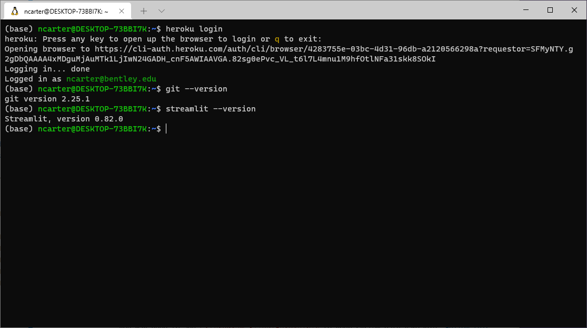

1. Detailed Course Schedule¶
This include all topics covered and all assignments given and when they are due.
1.1. Day 1 - 5/18/21 - Introduction and mathematical foundations¶
1.1.1. Content¶
1.1.2. Due before next class¶
DataCamp
Optional, basic review:
Required (though it may still be review):
Intermediate Python, chapters 1-4
pandas Foundations, just chapter 1
Manipulating DataFrames with pandas, just chapter 1
See here for a cheat sheet of all the content of the above DataCamp lessons.
Reading
Each week, you are expected to read the appropriate chapters from the course notes before class. Since this is the first day for the course, I did not expect you to have read Chapters 1-2 in advance. But that means that you must now read them together with Chapters 3-4 before next week.
Chapter 1: Introduction to data science (adds details to today’s class content)
Chapter 2: Mathematical foundations (adds details to today’s class content)
Chapter 3: Computational notebooks (Jupyter) (prepares for next week)
Chapter 4: Python review focusing on pandas and mathematical foundations (prepares for next week)
Other
If you don’t already have a Python environment installed on your computer, see these instructions for installing one. As part of that process, ensure that you can open both Jupyter Lab and VS Code.
Optional: There are many LOYO opportunities from today’s course notes (chapters 1 and 2). See the syllabus for a definition of LOYO (Learning on Your Own) and consider forming a team and siezing one of the opportunities.
1.2. Day 2 - 5/20/21 - Jupyter and a review of Python and pandas¶
1.2.1. Content¶
1.2.2. Due before next class¶
DataCamp
Manipulating DataFrames with pandas, chapters 2-4
See here for a cheat sheet of all the content of the above DataCamp lessons.
Reading
1.3. Day 3 - 5/25/21 - Before and after, single-table verbs¶
1.3.1. Content¶
1.3.2. Due before next class¶
Communication exercise
Create a new Deepnote project and upload into it this Jupyter notebook and this CSV file. (Please be sure to do this in a new Deepnote project, rather than just a new folder in an existing project. Grading becomes error-prone if I have to hunt through your folders for what I’m supposed to grade.)
The first half of the notebook has plenty of comments and explanations, but the second half does not. Use the principles discussed in class today (and covered in Chapter 5 of the course notes) to comment/document/explain the second half of that file.
Follow Deepnote’s instructions for how to export the resulting notebook as a PDF.
Submit that notebook to your instructor through Blackboard.
DataCamp
pandas Foundations, just chapter 2
See here for a cheat sheet of all the content of the above DataCamp lessons.
Reading
1.4. Day 4 - 5/27/21 - Abstraction and version control¶
1.4.1. Content¶
1.4.2. Due before next class¶
Version control exercise
This assignment is described in the final slide for Chapter 8, linked to above.
DataCamp
Intermediate Python, chapter 5
Statistical Thinking in Python, Part 1, all chapters
Introduction to Data Visualization with Python, chapters 1 and 3 only
See here for a cheat sheet of all the content of the above DataCamp lessons.
Reading
1.5. Day 5 - 6/1/21 - Math and stats in Python, plus Visualization¶
1.5.1. Content¶
1.5.2. Due before next class¶
Data preparation exercise
(Some steps of this you have probably already completed. What’s new for everyone is making a project that can easily load the file into Jupyter, so we’re ready to experiment with it next week in class.)
Look at the 2016 election data on this page of NPR’s website.
Extract the table from that page into a CSV file (for example, by copying and pasting into Excel, then touching it up as needed).
Write a Jupyter notebook that imports the CSV file.
Ensure that you remove all rows that are not for entire states (which you can do in Excel or Jupyter, whichever you prefer).
Follow Deepnote’s instructions for how to export the resulting notebook as a PDF.
Submit that notebook to your instructor through Blackboard.
DataCamp
Merging DataFrames with pandas, chapters 1-3
NOTE: We will not cover this content in class next time. We will cover it the subsequent class meeting instead. But I’m assigning you to do it now because then you won’t have any homework next time, when the project is due, and you’ll be able to focus on that instead.
See here for a cheat sheet of all the content of the above DataCamp lessons.
Reading
Other
Optional: There are several LOYO opportunities from today’s course notes (chapters 9 and 10). Consider forming a team and siezing one of the opportunities.
1.6. Day 6 - 6/3/21 - Processing the Rows of a DataFrame¶
1.6.2. Due before next class¶
No DataCamp today, so that you can focus on the project.
Reading
Other
Optional: There are a few LOYO opportunities from today’s course notes (chapter 11). Consider forming a team and siezing one of the opportunities.
1.7. Day 7 - 6/8/21 - Concatenation and Merging¶
1.7.2. Due before next class¶
It’s a light week, because you just did Project 1 and deserve a little time to rest.
DataCamp
See here for a cheat sheet of all the content of the above DataCamp lessons.
Reading
1.8. Day 8 - 6/10/21 - Miscellaneous Munging Methods (ETL)¶
1.8.2. Due before next class¶
DataCamp (last one for the whole semester!)
Introduction to SQL for Data Science
NOTE: Bentley’s CS350 course goes into this content in far greater detail. You can see this lesson as a small preview or taste of that course.
See here for a cheat sheet of all the content of the above DataCamp lessons.
Reading
Other
Ensure that you have the
gitcommand installed on your own computer (again, not on Deepnote or Colab).If you’re on Windows and have already installed the GitHub Desktop app, then you just need to tell Windows where to find the
git.execommand that’s built into that app. The folder containing it will be something likeC:\Users\YOUR-USERNAME\AppData\Local\GitHubDeskttop\app-2.8.1\resources\app\git\cmd. Investigate using Windows Explorer to find the correct path for your system. You may need to reveal hidden files and folders to find the AppData folder. (Yes, this is a pain.)If you’re on Mac, you might not have the
gitcommand unless you’ve installed Xcode at some time in the past. You can runxcode-select --installto install just the minimal Xcode tools to getgit. If that doesn’t work, download them directly from Apple, which may require creating a free developer account.To prove that you successfully got the
gitcommand installed, rungit --version.Take a screenshot of your terminal window showing the results of the successful
git --versionso I can see that you got this to work.
Install Streamlit on your own computer.
The command you need is
pip install streamlit.Do not run this command on Deepnote or Colab, but on your own computer.
Once you’ve installed it, you should be able to run the command
streamlit --versionto see what version is installed. Do so to ensure that your installation succeeded.
Create a Heroku account.
Then install the Heroku command-line tools on your own computer (again, not on Deepnote or Colab).
Ensure that after doing so, you can get to a terminal and run
heroku loginsuccessfully.If you’re on Windows and it can’t find the
herokucommand even though you just installed it, you may need to addC:\Program Files\Heroku\binto your system path variable. Follow this tutorial to do so.
Take a screenshot to prove that all this worked.
After you’ve run
heroku loginand can still see its successful output, just re-run thegit --versionandstreamlit --versioncommands so that all three outputs are on one screen, making it obvious that you’ve got all three tools installed correctly.Take a screenshot of that terminal window showing those three commands’ successful output.
Submit that screenshot via Blackboard as your homework.
It should look something like this:

Project Planning
Optional: If you want to get ahead on the final project in a way that’s rather easy and fun, start hunting for datasets that cover a topic you’re interested in and might want to analyze. Try to find a dataset that’s pretty comprehensive, so that there are plenty of options for ways to analyze, visualize, and manipulate it.
1.9. Day 9 - 6/15/21 - Dashboards¶
1.9.2. Due before next class¶
Network data exercise
The purpose of this exercise is to familiarize you with some network data, since next week we will be studying just that. It also gives you another chance to practice
pd.merge().Download this Excel workbook of shipping data among U.S. states in 1997.
Look over all the sheets in the workbook to familiarize yourself with their meaning.
Create a Jupyter notebook that reads all the sheets from the workbook.
Note: Reading Excel files requires installing the
openpyxlmodule, which is not present by default in some cloud computing environments. You may need to runpip install openpyxlin the terminal, or at the top of the notebook, or place it in arequirements.txtfile.
Add code that creates a DataFrame just like the shipping sheet, but with each state abbreviation replaced by its full name.
The “adjacent” column in the distances DataFrame should be boolean type; convert it.
Add two columns to the shipping table, one containing the distance between the two states, and the other containing the boolean of whether the two states are adjacent, both taken from the distance table.
Follow Deepnote’s instructions for how to export the resulting notebook as a PDF.
Submit that notebook to your instructor through Blackboard.
Reading
1.10. Day 10 - 6/17/21 - Relations, graphs, and networks¶
1.10.2. Due before next class¶
Data prep exercise for a music recommendation system
In class next time we will build a recommender system for songs (that is, given your preferences and a big database of other people’s preferences, it will try to match you with new songs you might like).
Visit this page and read about the data archive, then download it from there in ZIP format. It is almost 1GB in size, so leave some time for this download!
Unzip the download and find within it three files; we care only about
jams.tsv. Place this file in a folder where you can access it with Python and pandas. It contains every user’s “jams” from 2011-2015.Write some code to load into a pandas Series the full set of unique user IDs in that file. That is, do not include any user more than once in the series. (This code may be slow to run, because the file is large.) This step is asking for just the user IDs, not any jam or song data.
Use the
sample()method in pandas Series objects to select a random subset of the users to work with, so that we don’t have to deal with the entire jams file, which would take a long time to do computations with. Include at least 1000 in your sample, to get a sufficient representation of the full dataset. I chose 2000 in my own work, but later computations will get much slower if you go beyond about 2000.Write some code to load from the
jams.tsvDataFrame every jam by all the users in your sample. There are roughly 15 jams per user on average, so you should end up with 15 times as many results as the number of users you chose (about 15,000 to 30,000).We need only three columns of the result: user ID, artist, and song title. Discard all other columns.
To give a song a unique name string, let’s combine the artist and song title into a single column. That is, rather than a column with “Don’t Stop Believin’” for song title and “Journey” as artist, create a new column called “song” that contains text like “Don’t Stop Believin’, by Journey”.
Drop the original title and artist columns so that your final jams DataFrame contains just two columns, user and song.
Export that DataFrame to a new CSV file that we will analyze in class. Call it
jam-sample.csv.It should be less than 3MB, so you can email it to your instructor to demonstrate that you have done this prep work.
Reading
1.11. Day 11 - 6/22/21 - Relations as matrices¶
1.11.2. Due before next class¶
Data preparation exercise
In class next time we will do an introductory machine learning exercise about predicting mortgage approval/denial.
Download the training dataset here. It is a sample from the same mortgage dataset we’ve used many times. Recall that its data dictionary is available online here.
Load it into pandas and check the data types of the columns.
To make all the data numeric, we will be replacing categorical columns with boolean columns in which false is represented by 0 and true is represented by 1. This will make it possible to use that data in a numerical model.
Replace the
conforming_loan_limitcolumn with two boolean columns, one that means “conforming loan limit is C (conforming)” and one that means “conforming loan limit is NC (not conforming).” Don’t forget to use 0/1 instead of False/True. (There are other values that column may take on, but we will analyze just those two.)Replace the
derived_sexcolumn with two boolean columns, one that means “derived sex is Male” and one that means “derived sex is Female.” Don’t forget to use 0/1 instead of False/True. (There are other values that column may take on, but we will analyze just those two.)The
action_takencolumn contains only 1s and 3s. This is because this dataset was filtered to include only accepted or rejected mortgages (no withdrawals, pre-approvals, etc.). Replace this column with another boolean column, still using 0/1 for False/True, meaning “application accepted.”The debt-to-income ratio column is categorical instead of numeric. Make it numeric by replacing each category with a central value in that category. For instance, the category “20%-<30%” can be replaced with the number 25, the category “43” can be just the number 43, etc. Let’s use 70 for “>60%.”
Your newly cleaned data should have all numeric columns. Export it as a CSV file and bring it with you to class for an in-class activity in Week 12.
To receive credit for having done this preparatory homework, also email the file to your instructor before class on Week 12.
Reading
(Perhaps more assignments are coming; this section is still incomplete.)
1.12. Day 12 - 6/24/21 - Introduction to machine learning¶
1.13. Day 13 - 6/29/21 - Thanksgiving break, no class¶
No assignments over break, but it would be wise to continue to make progress on the Final Project.
1.14. Day 14 - 7/1/21 - Final Exam Review and Final Project Workshop¶
1.14.1. Final Exam¶
Based on the review we do in class today, study for the Final Exam.
1.14.2. Final Project¶
Come to class today ready to use half of class to work on your final project in class, and ask questions of the instructor if/when you get stuck on anything.